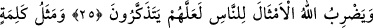
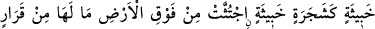
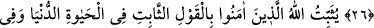
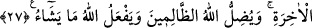

DEVAMLI MEYVE
VEREN SÖZ
24. Görmedin mi Allah nasıl bir misal getirdi: Güzel söz kökü sâbit, dalları gökte
olan güzel bir ağaç gibidir.
25. O ağaç Rabbinin izniyle her zaman yemişini verir. Allah, öğüt almaları için
insanlara böyle misaller verir.
26. Kötü sözün durumu da gövdesi yerin üstünden koparılmış sâbit olmayan kötü
bir ağaca benzer.
27. Allah îmân edenleri dünyâ hayâtında da âhirette de sağlam sözle tesbit eder.
Allah zâlimleri saptırır ve Allah dilediğini yapar.
“Görmedin mi” et-Te’vîlâtü’n-Necmiyye’de belirtildiği üzere mânâ: ‘Yâ
Muhammed! peygamberlik nûrun sâyesinde görmedin mi?’ şeklindedir. Kâşifî’ye göre
ise bu ifâde “Acaba görmedin mi, bilmedin mi, ey görücü ve bilici kul ki bu size anlatıp
açıklamak içindir.” demektir.
“Allah nasıl bir misal getirdi:” Allah onun benzerliğini nasıl açıklayarak lâyık
olduğu uygun yere koydu. “Güzel söz…” Bu cümle, “Görmedin mi” ifâdesinin
tefsîri/açıklamasıdır. Buradaki güzel söz, kelime-i tevhîddir. Yâni Allah’dan başka ilâh
olmadığına şâhidlik etmektir. Kur’an, tesbîhât, hamd etme, mağfiret dileme, tevbe etme,
İslâm’a dâvet etme gibi hakkı ifâde eden ya da salâha çağıran bütün güzel sözler de bu
kelimenin şümûlüne dâhildir.
Güzel söz: “kökü sâbit” yâni alt kısmı kökleriyle birlikte yeryüzünün derinliklerine
gidip iyice yerleşen, “dalları” yâni üst tarafı ve başı ise “gökte olan” yukarı tarafta
olan “güzel bir ağaç gibidir.” Yâni güzel sözün böyle bir ağaca benzediğine
hükmedilir, yoksa ‘Allah o sözü bu şekle soktu’ demek değildir.
Hz. Peygamber (a.s.) buyurur ki: “Kur’an okuyan mü’min portakal gibidir: Kokusu
hoş, tadı güzeldir. Kur’an okumayan mü’min hurma gibidir: Kokusu yoktur, tadı ise
güzeldir. Kur’an okuyan münâfık fesleğen gibidir: Kokusu hoş fakat tadı acıdır.